canton-tower/20250625-DSC08673.jpg
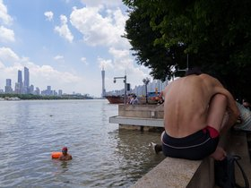
canton-tower/20250422-DSC03956.jpg
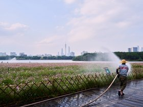
canton-tower/20250415-DSC03482.jpg
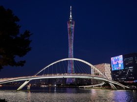
canton-tower/20250414-DSC03475.jpg
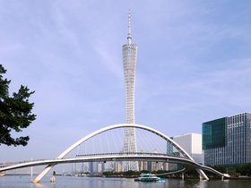
canton-tower/20250414-DSC03431.jpg
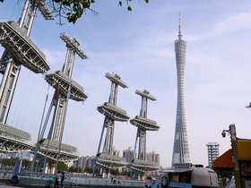
canton-tower/20250414-DSC03412.jpg
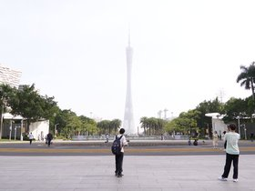
canton-tower/20250326-DSC02406.jpg
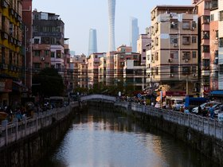
canton-tower/20250107-DSC08049.jpg
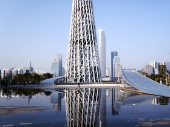
canton-tower/20250107-DSC08040.jpg
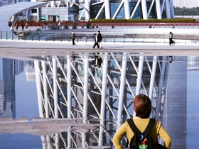
canton-tower/20250107-DSC08034.jpg
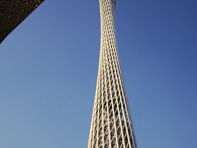
canton-tower/20240917-DSC07781.jpg
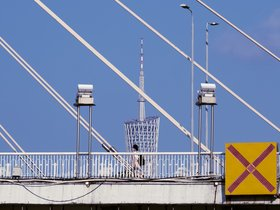
canton-tower/20231120-P1070501.jpg
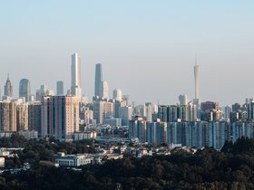
canton-tower/20220713-P1000976.jpg
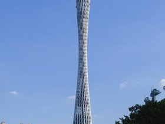
canton-tower/20211110-P1000364.jpg